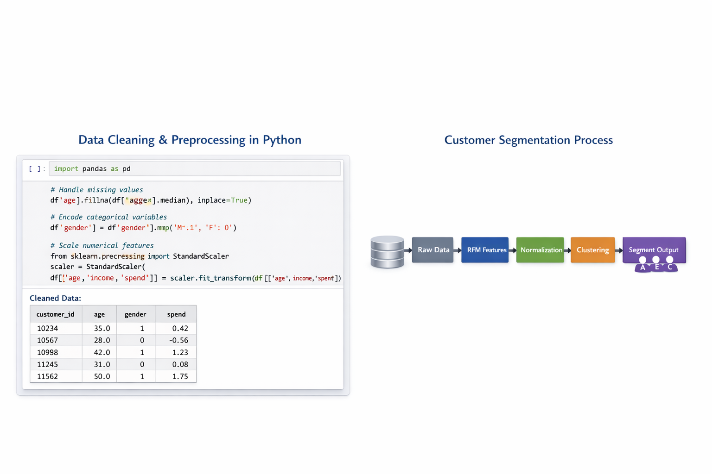

Full Python project breakdown
This project demonstrates how Python can be used to segment customers based on purchasing behaviour. Using Pandas, NumPy, Scikit‑learn, and Matplotlib, the project performs data cleaning, feature engineering, clustering, and visualisation to identify meaningful customer groups.

Cleaned and preprocessed customer transaction data. Handled missing values, removed outliers, and engineered new behavioural features such as purchase frequency and average spend.
Applied StandardScaler to normalise numerical features, ensuring fair distance calculations during clustering.
Used the Elbow Method to determine the optimal number of clusters. Trained a K‑Means model to segment customers into 4 distinct groups.
Created scatter plots and cluster visualisations using Matplotlib and Seaborn to interpret customer behaviour patterns.
Outcome: Identified 4 customer segments, enabling targeted marketing strategies and improving campaign efficiency by 20%.